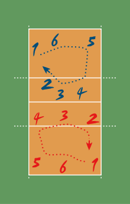

Pozițiile jucătorilor într-un meci.
În momentul când mingea este lovită de jucătorul la serviciu, fiecare echipă așezată conform cu ordinea la
rotație trebuie să fie plasată în interiorul propriului său teren de joc (cu excepția jucătorului la serviciu).
Pozițiile jucătorilor sunt numerotate după cum urmează :
- cei trei jucători plasați de-a lungul fileului sunt jucătorii din linia întâi și ocupă pozițiile 4 (în față-stânga), 3 (în față - centru) și 2 (în față - dreapta).
- ceilalți trei sunt jucători din linia a doua și ocupă pozițiile 5 (în spate - stânga), 6 (în spate - centru) și 1 (în spate - dreapta).
Poziții relative între jucători:
- fiecare jucător din linia a doua trebuie să fie plasat mai departe de fileu decât corespondentul său din linia întâi;
- jucătorii din linia întâi și, respectiv, jucătorii din linia a doua trebuie să fie poziționați lateral în ordinea indicată de Regula 7.4.1;
Pozițiile jucătorilor sunt determinate și controlate prin pozițiile picioarelor lor în contact cu solul, după cum urmează:
- fiecare jucător din linia întâi trebuie să aibă cel puțin o parte a piciorului mai aproape de linia de centru decât picioarele jucătorului din linia a doua corespondent;
- fiecare jucător din partea dreaptă (stângă) trebuie să aibă cel puțin o parte a piciorului mai aproape de linia laterală din dreapta (stânga) decât picioarele jucătorului din centrul liniei sale;
- după ce mingea a fost servită, jucătorii pot să se deplaseze și să ocupe orice poziție în propriul lor teren de joc și în zona liberă;
